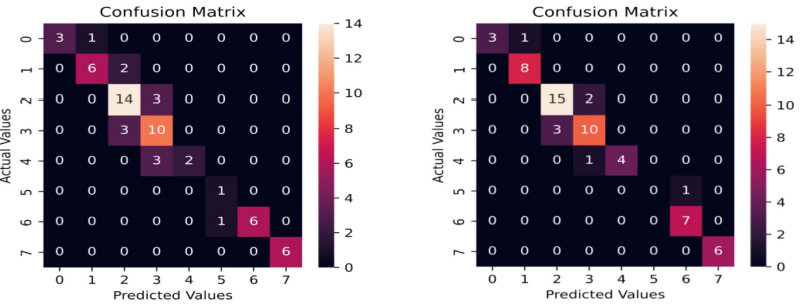
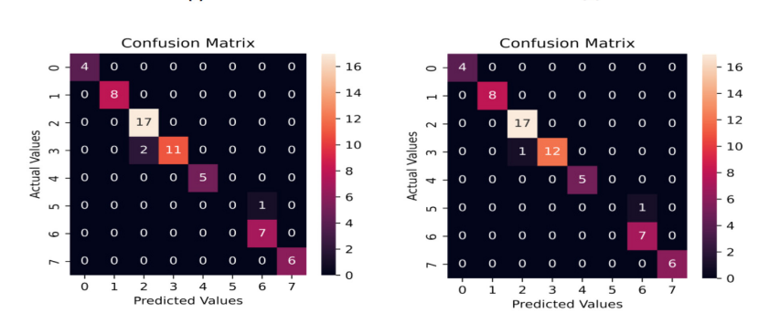
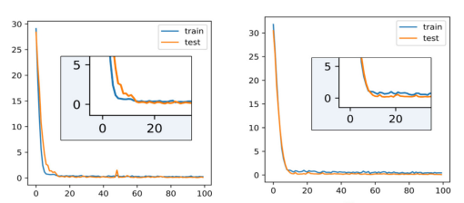
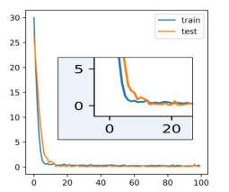

Deep Learnig Models for Power Transformer Helath condition Prediction
Goal: This project intends to predict the health condition of power transformers using Hybrid developed Learning models. Power transformers are critical parts of power delivery systems. So that the maintenance of the health of power transformers are very important. We have collected 607 transformer's data from Dhaka University of Engineering and Technology. There were about 31 colomuns for each transformers. I set the transformer's health condition as output parameter and the other parameters as input paramters.
Training Dataset Making: The class of transformer is determined using 32 input parameters. Ten different types of transformers are represented in the training dataset: Three categories: good level-1, good level-2, and good level-3—are used to categorize good transformers. The optimum condition is at good level-1, whereas good level-2 is superior to good level 3. Moderate-1, moderate-2, moderate-3, and moderate-4 are the four classes into which medium-type transformers are separated. Compared to moderate-2, moderate-3, and moderate-4, moderate-1 implies better condition. Similar to that moderate-3 is a better condition than moderate-4. Moderate-2 indicates a better state than moderate-3. The three classifications of poor transformers are poor level-1, poor level-2, and poor level-3.
Environment Setup
In this project total of 8 models are implemented and evaluated. In the algorithmic implementation,
the Google Colaboratory software package has been used with the necessary modification and extension.
In the experiment, the original database of 607 records is randomly split into two parts of a training
dataset and a testing dataset for validating the classification accuracy of the above eight algorithms,
where 70% of samples of the original dataset are considered for the training dataset and the remaining
30% for the testing dataset. It is worth pointing out that the data is scaled to [-1, 1] interval before
running any algorithm. The above dataset split, cross-validation, and testing will be repeated 100 times
for every algorithm.
Requirements:
Analysis of a video:
Classification of Transformers Using Machine Learning Classifiers:
There were several misclassifications found. The logistic regression model's total classification accuracy was 65.5 percent.
This makes it very evident that the suggested framework falls short of high accuracy in the categorization
of disorders.However, the classification accuracy frequently obscures the specifics and does not offer enough proof to claim that
a system's forecast is reliable. Another measure, the F1 score, which details the classification performance of certain fault classes,
was also used to evaluate the performance.
An F1 score of around 1 in a multi-class prediction problem denotes perfect classification performance, while an F1 value of 0 is the worst. While the recall counts the actual positives detected, the precision shows the proportion of positive identifications. By examining the aforementioned measured performance, it can be concluded that the suggested network categorizes transformers according to their health, but that its overall classification accuracy is less than 70%.
Classification after combining autoencoders and machine learning classifiers: The machine learning classifiers' classification outcomes weren't adequate for the task. However, because a transformer is a crucial component in the transmission and conversion of electricity, it is required to forecast the real class of a transformer. Therefore, feature extraction was carried out using various autoencoder types in order to produce reliable prediction results, and the new dataset that was mentioned in the previous study was developed. . The compressed dataset was then classified using machine learning classifiers.



As a consequence, integrated models are developed, and these models produce excellent classification outcomes. Figure [] displays each autoencoder's representation of the classification results using a confusion matrix for the logistic regression classifier. The combined MLPA/Logistic Regression model produces the best results overall in terms of classification accuracy. The classification accuracy of the combined model made with MLPA and Logistic Regression gives the best results among all the models.
Figure no illustrates the training and validation loss of 5 autoencoder models. The training and validation loss are often displayed on a graph simultaneously. This is done to evaluate the model's performance and determine which elements require fine-tuning. Three distinct situations must be detailed in order to clarify this. The validation loss sometimes exceeds the training loss. This might mean that the model is not fitting the data well. When a model is unable to effectively represent the training set of data, underfitting occurs and huge mistakes are produced. The model is overfitting and unable to generalize to new data if the validation loss is higher than the training loss.

